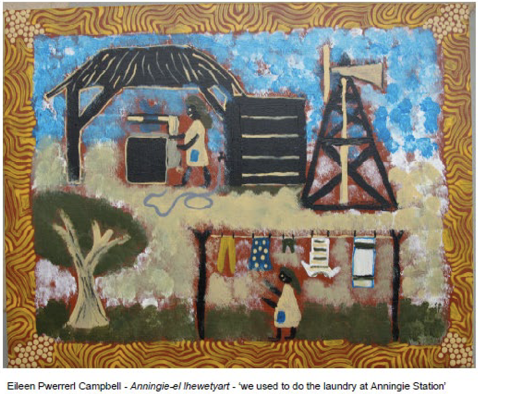
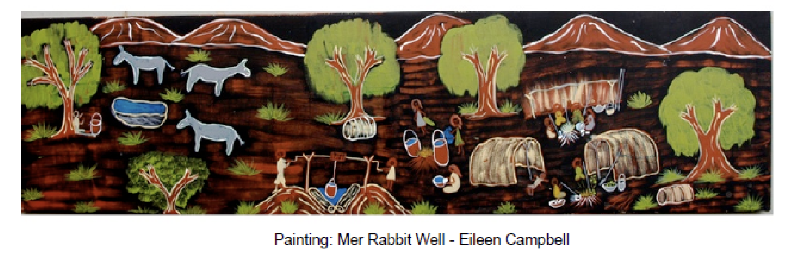

Working at Anningie Station
AnmWeb2-Recollections-10 Young Aningie women (1960-64) TT1-0001403 Sunday church service, Anningie station. (L – R) Eileen Pwerrerl Campbell, Mary Kemarr Woods (front) OR LYNETTE WOODS?, Nancy Kemarr Woods (back), Clarrie Kemarr Long.
Scherer collection
Nthwerey
I was born at Nthwerey, and I grew up there. Nthwerey is my menh-menh (mother’s mother’s) country, my grannie’s country. Then after that we went on foot to Anningie Station, when I was a bigger child. We went there because of sorry business. My parents, and all the brothers, and we took two grandfathers as well. We went on foot carrying our swags on our backs.
My tyemey (mother’s father) used to tell us kids Dreaming stories at night. And my old granny used to tell them as well. Anengkerr (Dreaming) stories. They used to tell us stories to make us go to sleep. We listened carefully to the old stories, Anengkerr. My grandmother, old Polly, used to tell us these stories, the old stories.
Clarrie and I started working at Anningie for the whitefellers. Clarrie was already working there, and then they got me to work. Late in the afternoon we’d bring the cows in – put the calves in the yard and put the mothers in another yard. We milked the cows for the whitefellers. We let the cows go out to graze. And then we washed the clothes and the plates. Then we’d do the ironing. They gave us rations, flour in a bag, and sugar, olden-time tea leaf and niki niki (block) tobacco. The working mob were given clothes and blankets for free. My father worked as a stockman and my mother got rations. My father was a stockman at Anningie. Then we went back again to Nthwerey. Then I worked in the kitchen. I worked at Ti Tree station for Heffernan.
EileenPerrwerl100417-01
EileenPerrwerl100417-04
EileenPerrwerl100417-02

Eileen Campbell standing outside the old meat house at Anningie station, April 2008
M Carew or D Strickland

Hunting
We used to go right up to Aileron on foot, hunting for yerramp (honeyants), and katyerr (desert raisins). We were hoping to get food, and we would bring it back, carrying it in bags on our heads. Picking the desert raisins and putting them in the bags that we carried on our heads. At that time, we were living at Irlpereny (Arden’s Soak). My father and my old granny, mum’s uncle, they went all the way to Aileron on foot. Hoping to get some food, or tobacco. They would carry it back in a bag on their heads. If Aboriginal people came, strangers from other places, hoping to get food or tobacco, the whitefellers got really angry and rounded them up with horses. Aboriginal people would only come out at night, and then they would wipe their tracks away with branches. If the whitefellers saw the tracks they would hit the people with whips.
EileenPerrwerl100417-03
